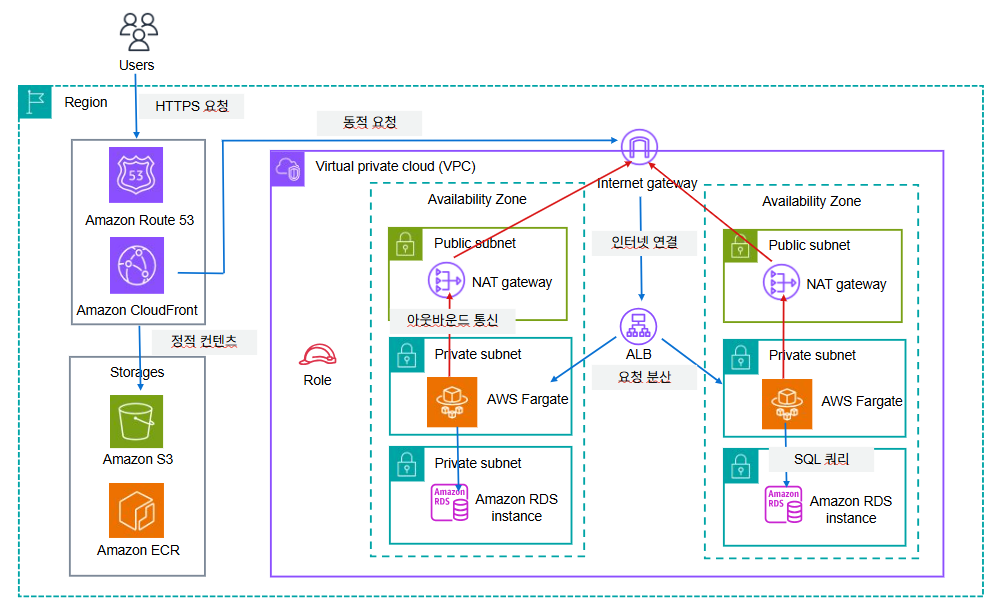

Travelog
사용자들이 여행 경험을 기록하고 공유할 수 있는 커뮤니티 플랫폼입니다.
프로젝트 소개
회원 관리
일반 회원가입/로그인 및 카카오 소셜 로그인 지원
리뷰 작성
여행지 리뷰 작성 및 다중 이미지 업로드 (평점, 카테고리, 태그 지원)
소셜 기능
좋아요, 북마크, 댓글, 팔로우/언팔로우
인증 / 인가
JWT 기반 Access / Refresh Token 관리
파일 관리
AWS S3 + CloudFront를 통한 이미지 저장 및 배포
아키텍처 & 기술 선택

ECS Fargate로 서버 관리 부담 없이 컨테이너를 운영하고, ALB로 트래픽을 분산하며, 데이터는 RDS와 ElastiCache로, 정적 자산은 S3 + CloudFront로 서빙합니다. VPC 내부는 Public / Private 서브넷으로 분리해 보안을 강화했습니다.
서버리스 컨테이너 실행으로 EC2 관리가 불필요하고, 사용량 기반 과금으로 비용을 최적화
Docker 이미지를 중앙에서 관리하고, ECS와 네이티브로 연동해 배포를 자동화
HTTP/HTTPS 트래픽을 분산하고, 경로 기반 라우팅과 헬스체크를 지원
S3에 정적 파일을 저장하고 CloudFront 엣지 캐싱으로 전송 속도를 향상
관리형 관계형 DB로 백업/복구를 자동화하고, Multi-AZ로 고가용성을 확보
인메모리 캐싱으로 DB 부하와 응답 속도를 개선, 서버리스로 용량을 자동 관리
논리적으로 격리된 네트워크 환경을 구성해 보안과 네트워크 제어를 강화
Public에는 ALB·NAT를, Private에는 애플리케이션과 DB를 배치해 보안 격리
VPC 내 Public 서브넷 리소스의 인터넷 양방향 통신을 담당
Private 서브넷의 안전한 아웃바운드 통신을 허용하고 인바운드는 차단
인스턴스 단위 가상 방화벽으로 인·아웃바운드 트래픽을 세밀하게 제어
자격 증명을 하드코딩하지 않고 최소 권한 원칙으로 리소스 간 권한을 부여
로그와 성능 지표를 중앙 집중 수집하고, 알람으로 운영을 자동화
인프라를 코드로 관리해 재현 가능한 환경 구축과 버전 관리·자동 배포를 지원
핵심 구현 기능
풀스택 개발자(백엔드 중심)로 AWS 인프라 초기 설계, 백엔드 API 개발, 프론트엔드 연동을 담당했습니다.
애플리케이션 기능
여행 리뷰 게시 시스템 확장
평점·카테고리·태그 추가, 다중 이미지 업로드(파일 크기 제한·유효성 검증), S3 연동으로 이미지 저장 후 객체 키를 DB에 저장하고 CloudFront URL로 빠르게 서빙. PostTag 엔티티로 태그별 분류 구현
북마크 기능
사용자별 북마크를 Many-to-Many로 설계, Bookmark 엔티티/테이블 구성, 추가·삭제 API와 마이페이지 조회 기능 구현
마이페이지 통합 관리
작성글·좋아요한 글·북마크한 글 탭 구성, 탭별 페이징 처리, UserAccount·Post·PostLike·Bookmark 조인 쿼리 최적화
검색 및 필터링
제목/내용 키워드 검색, 카테고리·평점 다중 필터링, JPA Specification으로 동적 쿼리 조합 처리
게시글 정렬
최신순·인기순(좋아요 수)·평점순 정렬 로직 구현 보조, PostLike 카운트 기반 인기도 계산
인프라 아키텍처 설계 및 연동
인프라 기초 설계
ECS·RDS·S3·CloudFront·ElastiCache 기반 전체 아키텍처 구성, 애플리케이션과 DB를 분리 설계
AWS RDS (MySQL) 연동
UserAccount·Post·Comment·PostLike·Bookmark·PostTag 등 핵심 엔티티 설계, schema.sql 기반 테이블 구조와 엔티티 매핑
AWS S3 연동
FileStorageService로 업로드/삭제 로직 구현, S3Config로 클라이언트·버킷 연동, 객체 키를 DB에 저장해 파일 관리 최적화
Redis 연동(유지보수)
기존 Refresh Token 저장 로직의 오류 수정, TTL 7일 자동 만료 설정 유지
그 외 기존 로그인/회원가입 모듈의 버그 수정과 안정화, 디자인 시안에 맞춘 프론트엔드 연동, 전체 게시글 목록 페이지의 검색·필터·정렬 통합 UI를 구현했습니다.
운영 & 검증
배포 프로세스
배포 전략: Rolling Update로 기존
Task를 유지하며 신규 버전을 점진 배포합니다. 최소 가용성 100% / 최대
가용성 200%로 배포 중 무중단 상태를 유지하고, 실패 시 이전 Task
Definition으로 즉시 롤백합니다. 환경 변수는 S3(s3://travelog-config/environment.env)에 저장 후 ECS Task Definition의
environmentFiles로
주입하며, 민감 정보는 향후 Secrets Manager로 전환할 예정입니다.
모니터링
CloudWatch Log Group
/ecs/travelog/app에서 애플리케이션 시작/종료, HTTP 요청/응답, Redis·S3 오류, JWT 검증
실패 로그를 실시간으로 확인합니다. ALB Target Group은 30초 간격으로
헬스체크(정상 2회 / 실패 3회 기준)를 수행하며, 장애 시 CloudWatch 로그
확인 → 필요 시 이전 버전 롤백 → Task 자동 재시작 → 정상 응답 확인
순으로 대응합니다.
테스트 결과
비용 분석
| 고정 비용 (24/7) | 스펙 | 월별 |
|---|---|---|
| ECS Fargate | 0.5 vCPU / 1GB · Task 1개 | $18.08 |
| RDS MySQL | db.t3.micro | $18.98 |
| ALB | 1개 | $16.43 |
| NAT Gateway | 1개 (필수) | $32.85 |
| S3 Standard | 10GB | $0.25 |
| 합계 | $86.59 | |
| 가변 비용 (트래픽) | 예상 사용량 | 월별 |
|---|---|---|
| CloudFront 전송 | 100GB | $8.50 |
| CloudFront 요청 | 1,000만 건 | $7.50 |
| NAT Gateway 데이터 | 50GB | $2.25 |
| ElastiCache Serverless | 변동 | ~$1.00 |
| S3 요청 | 변동 | ~$0.50 |
| 합계 | $19.75 | |
- Reserved Instance: RDS 1년 약정 시 ~40% 절감 가능
- Spot Instance: 개발/테스트 환경에 Fargate Spot 활용
- S3 Lifecycle: 90일 경과 이미지를 Glacier로 이동
- CloudFront 캐싱 TTL 최적화로 Origin 요청 감소
운영 체크리스트
배포 전
- 로컬 테스트 완료
- Docker 이미지 빌드 성공
- 환경 변수 S3 업로드 확인
- Task Definition 버전 확인
배포 중
- ECS Service 업데이트 상태 모니터링
- CloudWatch Logs 실시간 확인
- ALB Target Group Healthy 상태 확인
배포 후
- 2XX 응답률 90% 이상
- 응답시간 300ms 미만 유지
- 5분간 5XX 오류 없음
- 주요 API 기능 테스트
트러블슈팅
로컬 → S3 연결 Access Denied▸
원인
S3 접근을 위한 credential 설정이 누락됨
해결
S3Config에
credentialProvider를 직접 주입
AWS CLI 로그인 후 ECR 레포지토리 미조회▸
원인
AWS CLI에 다른 계정이 등록되어 있어 로그인 계정과 불일치
해결
ECR 로그인 → 등록된 계정 확인 → 계정 불일치 시 올바른 계정으로 재설정 → 재로그인
RDS 연결 실패 (CommunicationsException)▸
원인
ddl-auto: validate
설정 상태에서 신규 RDS에 스키마가 없어, 검증만 수행하는 validate
모드가 빈 DB에서 오류 발생
해결
RDS 신규 생성 시
update로 스키마
생성 후, 완료되면 다시
validate로 전환
Redis 연결 실패로 로그아웃 500 오류▸
원인
ElastiCache Serverless는 TLS 연결만 허용하는데 기본(평문) Redis 설정을 사용했고, 연결 실패 예외가 컨트롤러까지 전파되어 로그아웃 전체가 중단됨
해결
- TLS 연결 설정을 담은 RedisConfig 신규 작성
- Refresh Token 삭제 로직을 try-catch로 감싸 Redis 장애 시에도 로그아웃은 정상 처리, 장애는 로그로만 기록
- 운영 설정에 Redis 타임아웃 및 Lettuce 커넥션 풀 값 추가
CloudFront 이미지 403 AccessDenied▸
원인
Origin Access Control(OAC) 사용 시 서명·Origin Host 헤더·ARN 매칭·버킷 정책 조건 중 하나라도 어긋나면 접근이 거부되는데, 설정은 이론상 맞았음에도 내부 정합성 문제로 계속 거부됨
해결
OAC에서 레거시 OAI(Origin Access Identity) 방식으로 전환 - CloudFront가 자동 생성한 OAI 전용 IAM 사용자 ARN이 버킷 정책에 자동 반영되어 즉시 해결, 이후 캐시 무효화 수행
ECS → RDS 연결 오류▸
원인
RDS 보안 그룹 인바운드에 ECS 보안 그룹이, ECS 보안 그룹 아웃바운드에 RDS 보안 그룹이 각각 등록되지 않아 양방향 통신이 막혀 있었음
해결
RDS 인바운드에 ECS 보안 그룹 추가, ECS 아웃바운드에 RDS 보안 그룹 추가
ALB → ECS 트래픽 전달 안 됨▸
원인
ALB와 연결된 Target Group에 ECS Task가 등록되지 않아 라우팅할 대상이 없었음
해결
Target Group에서 ECS Task의 Private IP(포트 8080)를 직접 등록
ECS / ALB / RDS 보안 그룹 구성 정리▸
정리된 규칙
- ALB - 인바운드 HTTP(80)/0.0.0.0/0, 아웃바운드 ECS 보안 그룹으로 전체 트래픽
- ECS - 인바운드 8080/ALB 보안 그룹, 아웃바운드 3306/RDS 보안 그룹
- RDS - 인바운드 3306/ECS 보안 그룹, 아웃바운드 0.0.0.0/0 (패치 등 외부 통신)
한계 & 개선 계획
페이지 리다이렉트 & UX 안정성
한계
- 인증 리다이렉트 로직이 컴포넌트 단위로 분산되어 일관성 부족
- 일부 페이지에서 조건 분기 누락으로 의도치 않은 리다이렉트 발생
개선 계획
- Public/Protected Route 구분 및 접근 정책 재정의
- 인증 체크를 공통 Auth Guard로 중앙화, 글로벌 처리 로직 적용
Redis 인프라 구성 통합
한계
- Redis를 AWS 외부 서비스(Aiven)로 사용해 스택이 완전히 통합되지 않음
- VPC 내부 통신·보안 그룹 기반 제어에 한계 존재
개선 계획
- AWS ElastiCache 기반으로 통합, VPC 내부 통신 적용
- CloudFormation으로 Redis 인프라 코드화(IaC)
이미지 첨부 기능 확장성
한계
- 다중 이미지의 순서 관리 불가, 업로드 실패 처리 미흡
- 사용자 관점 미리보기 UX 부족
개선 계획
- PostImage 테이블 분리 및 순서(order) 필드 추가
- 업로드 실패 시 부분 롤백, 썸네일·캐싱 정책 최적화
모니터링 & 보안 체계
한계
- CloudWatch 로그 확인 중심의 기초적인 모니터링
- 장애·보안 이벤트 사전 감지·알림 체계 부족
개선 계획
- CloudWatch Metrics 시각화 및 Alarm → Slack/Email 연동
- APM·분산 트레이싱 도입 검토, WAF·HTTPS 강제 적용
DevOps 자동화
한계
- Docker 빌드·ECR 푸시·Task 등록이 모두 수동 프로세스
- CI/CD 부재로 반복 작업과 휴먼 에러 가능성 존재
개선 계획
- GitHub Actions 기반 CI/CD 구축, ECS 자동 배포 연동
- Blue/Green·Canary 배포 및 Auto Scaling 정책 검토